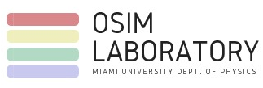

I am passionate in applying cutting-edge computational tools combined with physics-based principles to build efficient medical and laboratory diagnostic devices. I found my interest in research during my undergraduate years at Miami University where I majored in Biophysics with a minor in Bioinformatics. I began working in the Biomedical Optics Lab (OSIM) under Dr. Karthik Vishwanath, on the project "The reliability and accuracy of estimating heart-rates from RGB video recorded on a consumer grade camera". This project gave me the opportunity to work with faculty from the Department of Psychology and equip me with the skills that go behind doing research. The project was later presented at the annual SPIE Photonics West conference, 2017 and published in the following proceedings.

I completed my undergraduate studies by doing a senior capstone project on the topic, "Extracting broadband optical properties from uniform optical phantoms: Inverse Adding-Doubling (IAD) & Integrating Sphere (IS)". This project provided me with a more "hands-on" experience of setting-up OSIM's first IS system for reflectance/transmittance measurements, coupled with a supercontinuum laser. I also had the opportunity to explore the working of both the IAD and Monte-Carlo Simulations, and implement it with the IS system to provide accurate estimates of optical properties. I was able to present this topic at multiple conferences and published in SPIE's 2018 proceedings.
Currently, I am doing my Masters in Physics at Miami University, on the thesis, "Machine Learning (ML) tools in the extraction of broadband optical properties from Integrating Sphere measurements". Exploring ML techniques to extract optical properties has let me explore the main theory behind neural networks (NN) and the different training methodologies used to allow the networks to learn. For my thesis, I worked with both simple shallow NNs for regression models and convolution NNs for other image processing applications. This project has motivated me to continue pursuing ML techniques in Biomedical optics for my PhD research as well.
I am from India, completed my high-school in the Middle-East followed by my Bachelors and Masters in the US. Being in various parts of the world through my life, has helped me work with people from different view points and bring a diverse set of views to any group that I work with. I am dedicated and strive to perform the best in all that I do with hopes of building a legacy which future scientist can expand upon to further human understanding.
 I am passionate in applying cutting-edge computational tools combined with physics-based principles to build efficient medical and laboratory diagnostic devices. I found my interest in research during my undergraduate years at Miami University where I majored in Biophysics with a minor in Bioinformatics. I began working in the Biomedical Optics Lab (OSIM) under Dr. Karthik Vishwanath, on the project "The reliability and accuracy of estimating heart-rates from RGB video recorded on a consumer grade camera". This project gave me the opportunity to work with faculty from the Department of Psychology and equip me with the skills that go behind doing research. The project was later presented at the annual SPIE Photonics West conference, 2017 and published in the following proceedings.
I am passionate in applying cutting-edge computational tools combined with physics-based principles to build efficient medical and laboratory diagnostic devices. I found my interest in research during my undergraduate years at Miami University where I majored in Biophysics with a minor in Bioinformatics. I began working in the Biomedical Optics Lab (OSIM) under Dr. Karthik Vishwanath, on the project "The reliability and accuracy of estimating heart-rates from RGB video recorded on a consumer grade camera". This project gave me the opportunity to work with faculty from the Department of Psychology and equip me with the skills that go behind doing research. The project was later presented at the annual SPIE Photonics West conference, 2017 and published in the following proceedings.